| Data Import/Export | 시작 다음 이전 |
데이터의 추가 삭제 등의 관리를 편리 하게 하기 위해 데이터의 Import, Export 를 지원합니다. 현재는 DefineMent 와 DefinePacket, DefineMenu 아이템에서 지원합니다.
지원 파일
· ".xls", ".csv", ".txt" 를 지원 하며, xls 은 셀별로 항목이 구분되며, csv 는 코마(",")로 구분되며, txt 는 탭(Tab) 으로 구분 됩니다.
· Import 하는 경우는 xls 파일만 쓸것을 권고 합니다. xls 는 구분이 셀 단위라 데이터 구분자인 코마(","), 탭(Tab) 이 포함되어 있어도 처리가 가능하기 때문입니다.
DefineMent
- 엑셀 파일을 포멧에 맞게 작성 해야 합니다. - 쉽게 작성을 하려면 빈 리스트를 Export하여 만들어진 파일을 편집하면 쉽습니다. - DefineMent 아이템의 리스트와 같은 헤더 타이틀인 "ID File Description" 이 1열에 있어야 하고 쉬트의 이름은 "DefineMent" 여야 합니다.
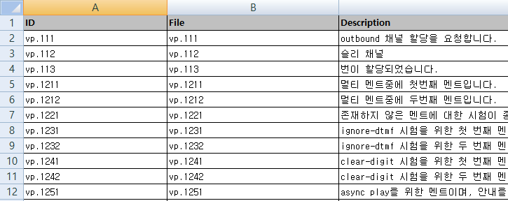
- DefineMent Item 에서 버튼을 눌러서 작성한 파일을 선택 할 수 있습니다.
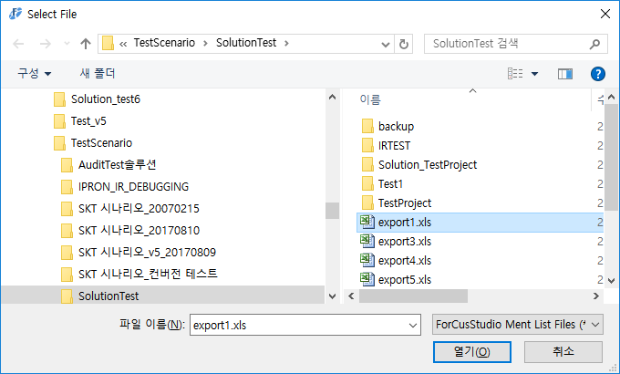
- Import 하려는 Excel 파일을 열고 있는 경우 에러가 발생 합니다.
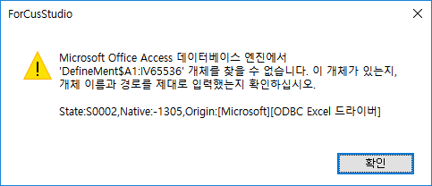
- DefineMent Item 에서 버튼을 누르면 저장할 파일명을 입력하는 창이 팝업되며, 파일 경로, 파일 이름을 지정하고 파일 타입을 선택 한 후 저장 버튼을 누르면 Export 파일이 생성 됩니다.
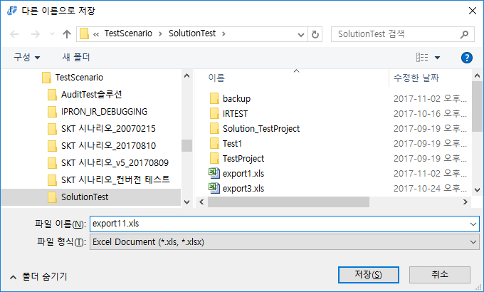
- Export 파일 생성에 성공하면 생성 경로가 있는 다이얼로그가 팝업 됩니다.
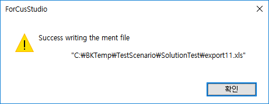
· 기타 Import/Export 기능이 있는 아이템
DefineTrack, DefineChatText
DefinePacket
Import/Export 공통으로 아래의 Format 선택을 해야 합니다.
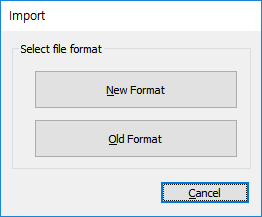
- New Format : Excel파일에 정해진 포멧의 데이터로 입력을 합니다. Send, Receive가 각 다른 시트에 있으며 Repeat부분도 각 Send,Receive에 포함되어 있습니다. - Old Format : Excel 및 Text로 입력을 받으며, DefinePacket Item의 내용처럼 Send, Receive, Repeat의 필드가 하나의 레코드에 모두 있는 포멧입니다.
[Old Format] - 엑셀 파일을 포멧에 맞게 작성 해야 합니다. - 쉽게 작성을 하려면 빈 리스트를 Export하여 만들어진 파일을 편집하면 쉽습니다. - DefinePacket 아이템의 각 파트 리스트의 헤더 타이틀과 같은 이름이 1열 모두 있어야 하고( "SendType 부터 RepeatDescription 까지" ) 쉬트의 이름은 Import 할 DefinePacket 아이템의 ID 가 비어 있는 곳은 "DefinePacket", ID 가 있다면 해당 ID 이름을 지정 하면 됩니다.(Name이 있으면 구분자 "."를 포함하여 Name을 같이 입력해 주면 Name항목에 전문이름이 설정됩니다.
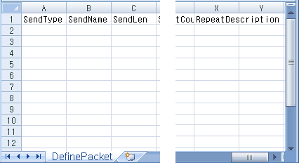
- 하나의 엑셀 파일에 여러개의 Packet 을 지정하여 Import 할 수 있는데 각 Packet 은 쉬트이름으로 구분 하여 처리 합니다. - Sheet이름은 Packet ID.Packet Name 으로 처리 합니다.
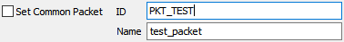
- DefinePacket Item 에서 버튼을 누르면 작성한 파일을 선택할 수 있습니다.( 파일은 하나지만 각 DefinePacket 마다 Import 를 해주어야 합니다. )
[New Format] - 정해진 Excel의 전문 포멧대로 작성해야 합니다.(Excel 포멧의 각 셀에 맞게 정확히 작성해야 합니다.) - 시트 이름이 Packet ID/Name 으로 사용되지 않으며 중복되지 않게만 입력하면 됩니다. - Packet ID에 Import할 ID가 있어야 Import가 됩니다.(작성한 Excel 전문 포멧에 같은 Packet ID가 있어야 한다. 하나의 Excel파일에 여러 전문이 작성될수 있으므로 Packet ID 입력이 없으면 안된다.) - 리본 메뉴 Project > Import > DefinePacket 메뉴를 이용하면 작성한 전문 전체에 대해서 Import 됩니다.
- 전문 엑셀 시트 작성 시 각 셀 항목에 대한 설명
• {A7} 전문ID : 이 항목이 없으면 전문으로 판단하지 않고 Import하지 않는다. • {C7} 전문ID Value : 값이 "COMMON" 이면 공통전문으로 판단하여 처리하고, 다른 값은(없거나) 사용하지 않는다.
• {G7} 전문명 : DefinePacket 에서 전문이름("Name")에 해당합니다. 이 항목이 없으면 전문으로 판단하지 않고 Import하지 않는다. • {I7} 전문명 Value : DefinePacket 에서 전문이름에 값이 설정된다. 전문 이름은 없어도 Import되나 Tracking에서 사용하므로 필요 시 입력한다. 전문 이름("Name")으로 사용되므로 "요청", "응답" 등의 문자는 제거된다.
• {G8} Direction : Send, Receive 전문을 구분하는 항목입니다. 이 항목이 없으면 전문으로 판단하지 않고 Import하지 않는다. • {I8} 전문ID Value : 대소문자 구분없으며, "요청", "SEND", "SND", "S"("응답", "RECEIVE", "RECV", "RCV", "R")의 값들을 모두 처리한다.
• {A9} ARS_Service Code : 이 항목의 값도 Import 시에 저장되므로, Import된 데이터에 이 값이 있으면 Export 시에 이 값이 출력된다.
• {G9} Define ID : DefinePacket에서 전문ID("ID")에 해당 합니다. 이 항목이 없으면 전문으로 판단하지 않고 Import하지 않는다. • {I9} 전문ID Value : Send/Receive 전문이 각 다른 엑셀 시트에 있지만 이 값이 같으면 같은 DefinePacket 아이템의 데이터가 됩니다.
• {A11} 일련번호 : 공통전문이 있는지 여부를 파싱할 때 사용하며, 전문 리스트에서 "COMM"이 있으면 공통전문이 포함된 것이다.
• {B11} 필드 명(한글) : DefinePacket 전문 필드 속성에서 "Description"에 해당하며, 공통전문인 경우 전문이름 입니다. 항목의 값이 "반복부시작" 이면 반복부가 시작되는 전문 필드이며, "반복부종료" 사이의 값이 Repeat Part의 전문이 됩니다.
• {C11} 필드 명(영문) : DefinePacket 전문 필드 속성에서 "Name"에 해당하며, 공통전문인 경우 전문ID 입니다.(Name최대 길이는 100byte 입니다) 필드 명(한글) 항목의 값이 "반복부시작" 일 때, 이 값이 있으면 반복부 카운트가 있는 전문 필드이다.("CountName"에 해당) 필드 명(한글) 항목의 값이 "반복부시작" 일 때, 이 값이 없으면 바로 상위의 값이 반복부 카운트가 된다.
• {D11} 데이터 Type : 전문 필드 타입의 숫자/문자 설정하는 부분이며, 이 항목의 값에 따라서 전문 필드 속성의 "Fill", "Align"의 값이 결정된다. 'C' : Fill(' '), Align(left) / 'N' : Fill('0'), Align(right)
• {F11} 길이 : DefinePacket 전문 필드 속성에서 "Len"에 해당하며, 전문 필드 길이를 입력합니다.
• {I11} Default : DefinePacket 전문 필드 속성의 "Default" 에 해당합니다.(옵션항목)
• {J11} Encrypt : DefinePacket 전문 필드 속성에서 "Encryption"에 해당하며, 운영관리로(Swat) 전문 CDR전송 시 필드를 암호화 하여 전송합니다. 1(필드 암호화 O), 0(필드 암호화 X), (옵션항목)
• {K11} Pattern : DefinePacket 전문 필드 속성에서 "Pattern" 에 해당합니다. (옵션항목) Display Pattern, 운영관리에서(Swat) 전문 필드의 값을 화면에 출력시 사용하는 패턴 입니다.(DefinePacket/Pattern)
• {L11} Trim : DefinePacket 전문 필드 속성에서 "Trim"에 해당합니다. 기본은 No Trim이며, 설정 시 전문 필드의 값의 공백을 Trim 합니다. left(Trim Left), right(Trim Right), all(Trim Both), (옵션항목)
※ 옵션항목 : 엑셀 전문 작성 시 항목이 없어도 되는 항목이다.
• {A12} "COMM" : 공통전문인 경우 표시입니다. • {B12} "전체공통전문" : 공통전문인 경우 공통전문의 전문이름(DefinePacket의 "Name") 입니다. • {C12} "PKT_COMMON" : 공통전문인 경우 공통전문의 전문ID(DefinePacket의 "ID") 입니다.
- Send 전문 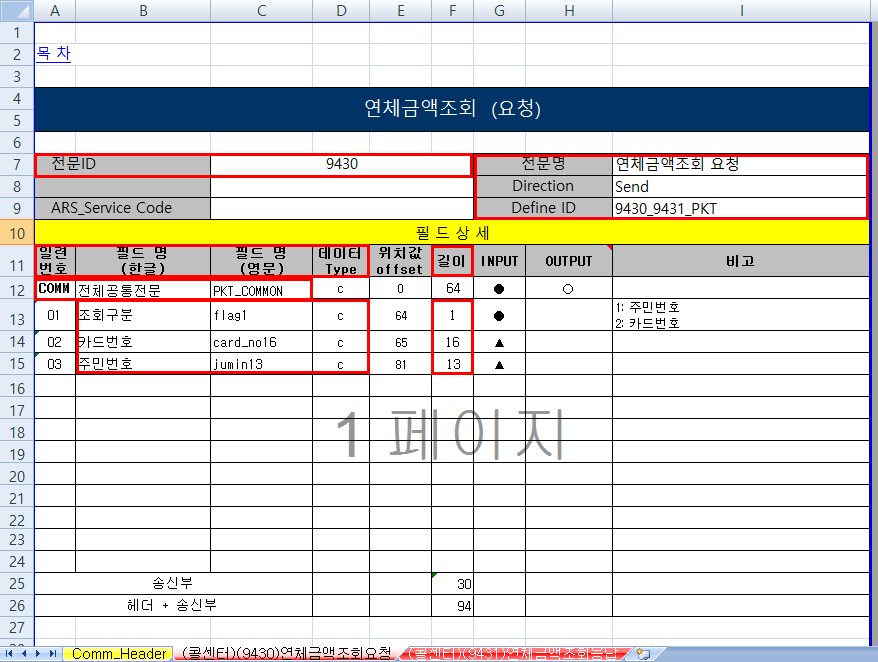
- Receive 전문 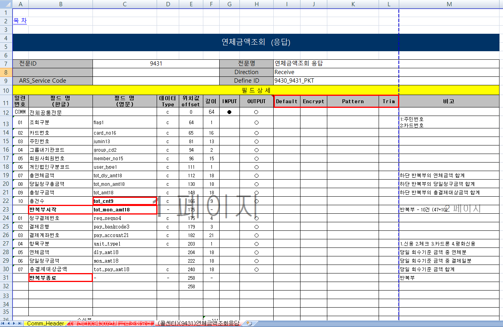
- 공통 전문 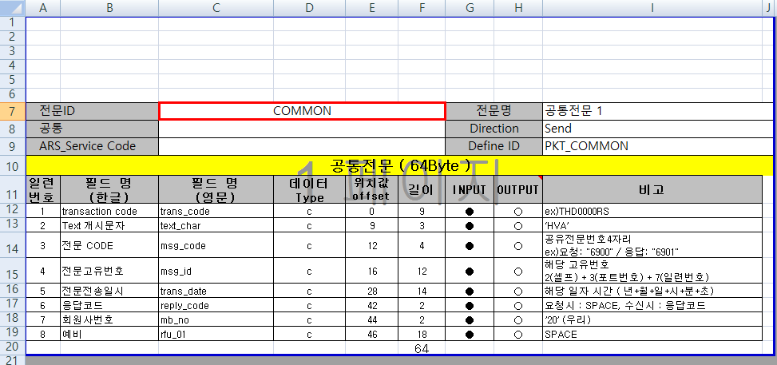
[Old Format] - 하나의 파일에 여러개의 DefinePacket 아이템을 기록 할 수 있습니다. - DefinePacket 의 구분은 Packet ID 로 구분이 되며 ID 가 비어있는 경우는 "DefinePackt" 으로 지정 됩니다.( 비어 있는 아이템을 여러개를 하나의 파일에 Export 하는 경우 이전 내용은 덮어 써 지게 됩니다) Name이 있으면 PacketID.PacketName으로 Sheet이름이 설정됩니다.
- DefinePacket Item 에서 버튼을 눌러 파일을 저장 할 수 있습니다.
[New Format] - Send, Receive각 다른 Sheet에 출력 됩니다. - 시트이름은 "순차번호" + "_" + "Packet ID" + "요청"("응답") 으로 만들어 지며, 더 이상 Old Packet Format처럼 Import시에 Packet ID/Name속성의 값으로 사용되지 않고 단지 시트 이름으로만 사용됩니다.(ex: 01_PKT-TEST요청) - Send/Receive에는 반복부가 포함되어 있으며, 정해진 포멧의 형태로 출력됩니다. - 리본 메뉴 Project > Export > DefinePacket 메뉴를 이용하면 정의된 전문 전체에 대해서 Export 됩니다.
시나리오 함수(.ssfx) 리스트
- 함수(시나리오 파일) 리스트를 엑셀로 출력합니다. - 리본 메뉴 Tools > Report > Function List 메뉴로 가능합니다. * 함수는 시나리오 파일(.msfx, .ssfx) 입니다.
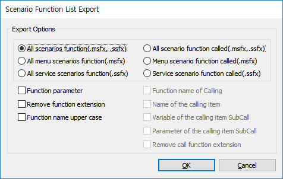
Export Options
All scenario function(.msfx, .ssfx) : 모든 시나리오 함수 리스트 출력 All menu scenario function(.msfx) : 모든 메뉴 시나리오 함수 리스트 출력 All service scenario function(.ssfx) : 모든 서비스 시나리오 함수 리스트 출력 All scenario function called(.msfx, .ssfx) : 모든 호출된 시나리오 함수 리스트 출력 Menu scenario function called(.msfx) : 호출된 메뉴 시나리오 함수 리스트 출력 Service scenario function called(.ssfx) : 호출된 서비스 시나리오 함수 리스트 출력
Function parameter : 함수 파라미터 출력 Remove function extension : 함수 이름의 확장자 제거 Function name upper case : 함수 이름 대문자
Function name of Calling : 시나리오 함수를 호출한 아이템이 속한 함수 이름 출력 Name of the calling item : 함수를 호출한 아이템 이름 출력 Variable of the calling item SubCall : 함수를 호출한 아이템(SubCall)의 변수(Name 속성 변수, 메뉴 아이디) 출력 Parameter of the calling item SubCall : 함수를 호출한 아이템(SubCall)의 파라미터 출력 Remove call function extension : 호출한 함수 이름의 확장자 제거
Export Sample
- 모든 호출된 시나리오 함수 리스트 출력(.msfx, .ssfx)에 호출한 함수 이름, 호출한 아이템 이름, 호출한 아이템 변수, 호출한 함수 파라미터
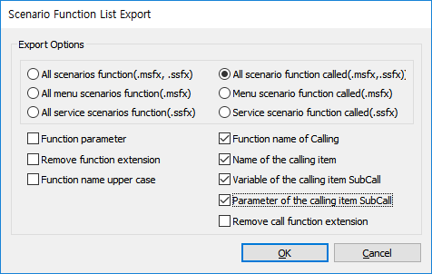
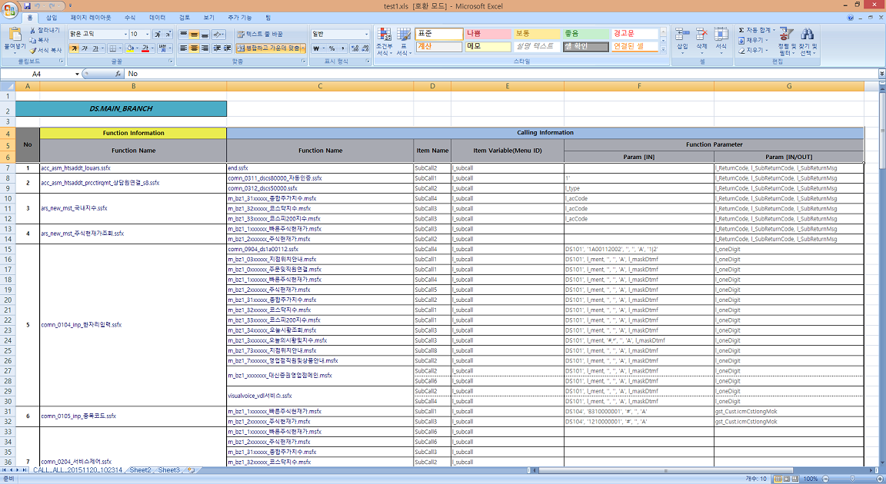
|
| Copyrights(C) Bridgetec.co.kr. All Rights Reserved | 시작 다음 이전 |